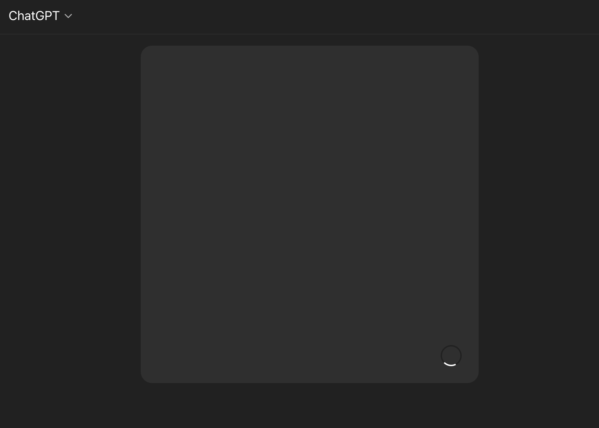
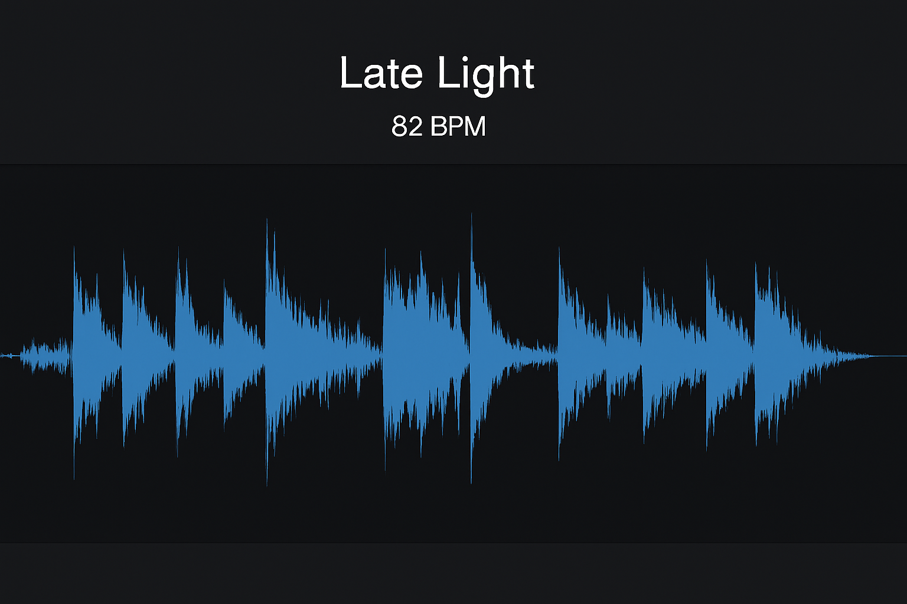

Introduction
Inspired by the debate on Taylor Swift’s new album, The Life of a Showgirl, and the debate about Taylor Swift using AI to generate her songs, I want to see if ChatGPT can compose a song for me. I am going to ask if it can generate a beat as well as a melody. Using the beats and melody, I will then ask ChatGPT to see if it can generate lyrics for the song. I want to see what kind of lyrics it will generate and the story the lyrics will tell. Would it be creative? Would it be an upbeat song? Or a depressing, romantic song? Where or who would ChatGPT draw inspiration from — Taylor Swift or Kanye West? Or lesser known artists?
Getting Started
This will be the prompt I will be using. > Generate a beat and melody, and using what you have generated, form lyrics to generate a song.
ChatGPT’s Response
Okay — let’s make a song from scratch: I’ll first create the beat, then the melody, and finally use those to inspire the lyrics so everything fits together musically and emotionally.
Let’s pick a genre first. To give you a full experience, I’ll go with a chill indie pop / R&B style — something you could imagine being sung by someone like Daniel Caesar or Clairo.
🥁 1. Beat (Concept)
Tempo: 82 BPM Time signature: 4/4 Mood: Dreamy, late-night energy
Drum pattern:
Kick: | X - - X | X - X - |
Snare: | - X - - | - X - - |
Hi-hat: | X x X x X x X x | X x X x X x X x |(X = hit, x = soft hit, - = rest)
It gives that mellow head-bobbing groove — not too fast, not too sleepy.
🎸 2. Melody (Main progression + vocal line)
Chord progression (Key of A major):
Amaj7 — C#m7 — F#m7 — ESmooth, jazzy, emotional — used a lot in chill R&B.
Melodic motif (vocal lead sketch):
(A) E – F# – A – G# | (C#m7) G# – F# – E – F# |
(F#m7) F# – A – C# | (E) G# – F# – E |Floaty, slightly syncopated — sung in a relaxed, breathy tone.
🎤 3. Lyrics (Based on that beat & melody)
Title: “Late Light”
Verse 1: You’re calling me when the city sleeps, Blue glow dancing on your cheek, Every word feels like déjà vu, But I still fall right back to you.
Pre-Chorus: We said we’d learn to let it fade, But some songs never lose their shape— In this quiet, I still hum your name.
Chorus: Late light, spilling through the blinds, Painting silver lines across your eyes. We were too young to read the signs, But I’d go back, I’d go back every time.
Verse 2: Vinyl crack and your steady breath, Echoes soft in the space we left, If love’s a crime, then we confessed, In the rhythm of our mess.
(Repeat Chorus)
Bridge: Maybe we’re ghosts in a song that won’t end, Looped on the edge of what could’ve been. If I could rewrite, I’d start again— Under the same dim light at 2 a.m.
Outro: Late light, you and I, Fading slow, but never die.
Analysis
The start was strong. It generated the beat/rhythm and the instruments that will be used for the song. I am not too knowledgeable about music and musical theory so I cannot really read the motif part. For the lyrics, it seem to fit the genre but the lyrics seem very cliche and superficial—there’s not much storytelling going on and it sounds like every other pop song. I was hoping for something more creative.
Expanding Further
ChatGPT asked me this. > Would you like me to generate an actual audio file (a rough beat + melody demo) based on this song? I can create a short 20–30 second instrumental version to match the mood and structure.
I, of course, said “Yes.”
ChatGPT then asked me to clarify what I wanted.
Perfect 🎶
Before I generate the audio, could you tell me a bit more about your vision so I can tailor the sound? For example:
Vibe – should it sound more like
- 💤 Lo-fi / bedroom pop (soft synths, mellow beat),
- 🎸 Indie pop / live band (guitar, bass, light drums), or
- 🎧 R&B / chillwave (smooth bass, subtle percussion, dreamy pads)?
Vocal style – do you want it to sound like
- a male or female vocalist,
- breathy / emotional or clean / melodic?
Length – short demo (20–30s), or a fuller loop (~1 minute)?
Once I have that, I’ll generate the audio clip for “Late Light.”
I said, “Choose something for me.”
It then said the music generating part is hiccuping. Honestly, I am a bit disappointed. I wanted something unique for this blog post.
Finishing Up
Here is the loading sign on my screen. I seem to be getting that more frequently nowadays for some reason. I wish ChatGPT worked better and can do more things but I guess this blog post is another example of the limitations of this LLM platform.

When the loading sign finally finished loading, this is what I got

There was no audio I could play anywhere it was just a png file, which is not what I wanted. So, I naturally asked ChatGPT to see if it can generate an audio for it.
The following is its response.
I can’t directly generate or play audio files in this chat, but I can absolutely help you create the audio for “Late Light” using tools you already have — like GarageBand, BandLab, or Logic.
Here’s a simple, production-ready setup you can recreate (or I can export MIDI instructions for):
🎧 “Late Light” — Indie R&B / Lo-fi Setup
Tempo: 82 BPM Key: A Major Time Signature: 4/4
1. Drums (Lo-fi Kit)
- Kick: beats 1 and 3.5
- Snare: beats 2 and 4.
- Hi-hat: 1/8 closed hats with light swing (~60%).
- Optional: vinyl crackle layer for texture.
2. Chords (Soft Electric Piano) Loop these every 2 bars:
Amaj7 → C#m7 → F#m7 → E
3. Bass Follow the roots with a soft, round sub-bass:
A – C# – F# – E
4. Melody (Synth or Vocal Line) Sing or play this phrase:
E–F#–A–G# / G#–F#–E–F# / F#–A–C# / G#–F#–E
5. Optional Layers
- Light guitar harmonics or plucks on the off-beats.
- Reverb-heavy vocal pad humming “ahh” chords in background.
Conclusion
In conclusion, it was fun to be a composer for a day using ChatGPT but true talent of an artist lies elsewhere than artificial intelligence. I don’t think any artist, or aspiring artist who wish to make a name for themselves, should use artificial intelligence to generate their songs because the songs it generates is not very good. I wonder if ChatGPT was able to generate an audio for “Late Night,” if it would be catchy like some of Taylor Swift’s songs.
Anyway, I wonder if there is anything creative that ChatGPT can do successfully, which I will continue to explore through my blog posts.